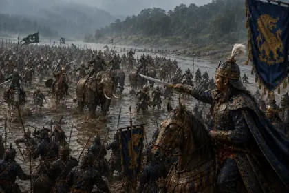
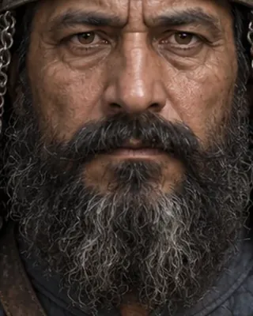

1532
d. 1533 · Commander from Bengal

Led the 1532–33 invasion, defeating Suklen at Singri before the Ahoms counterattacked; killed near the Bharali river.
Sources disagree on his origin (Turko-Afghan or Bengali).
Record confidence: medium.